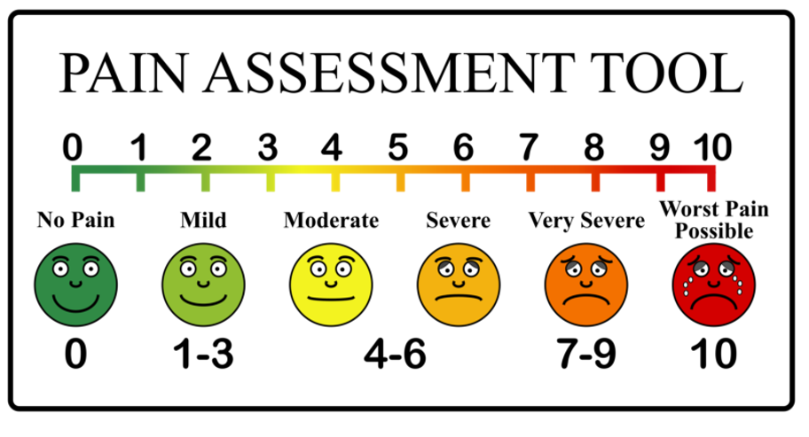

“Đau sau mổ là bình thường, nhưng hoàn toàn có thể kiểm soát được. Hãy báo cho nhân viên y tế khi đau để được giúp đỡ kịp thời.”
1. VÌ SAO CẦN KIỂM SOÁT ĐAU?
- Giúp người bệnh dễ chịu và an tâm hơn.
- Hỗ trợ vận động sớm, phòng ngừa biến chứng và phục hồi nhanh.
2. THEO DÕI MỨC ĐỘ ĐAU
Người bệnh sẽ được nhân viên y tế hỏi về mức độ đau theo thang điểm từ 0 đến 10:
- 0 Không đau
- 1–3 Đau nhẹ (Vẫn sinh hoạt bình thường)
- 4–6 Đau vừa (Ảnh hưởng đến giấc ngủ/vận động)
- 7–10 Đau nhiều (Không thể chịu đựng được)

- Đau tăng lên bất thường hoặc đột ngột
- Đau không giảm sau khi đã dùng thuốc
- Đau kèm theo cảm giác tê rần hoặc yếu liệt chân
3. PHƯƠNG PHÁP KIỂM SOÁT ĐAU
a. Dùng thuốc
- Dùng thuốc theo chỉ định (uống, tiêm hoặc truyền).
- Không tự ý thay đổi liều.
- Báo ngay nếu chóng mặt, buồn nôn.
b. Tư thế & Vận động
- Nằm đúng tư thế, giữ lưng thẳng.
- Tránh xoay người hoặc cúi gập đột ngột.
- Vận động nhẹ giúp máu lưu thông và giảm đau.
c. Biện pháp hỗ trợ
- Nghỉ ngơi, hít thở sâu để thư giãn.
- Đeo đai lưng khi ngồi dậy hoặc đi lại.
- Tháo đai lưng khi nằm nghỉ.
4. LƯU Ý QUAN TRỌNG
Không cố chịu đau: Cần báo sớm để thuốc phát huy tác dụng tốt nhất.
Tuân thủ: Thực hiện đúng hướng dẫn vận động của nhân viên y tế.